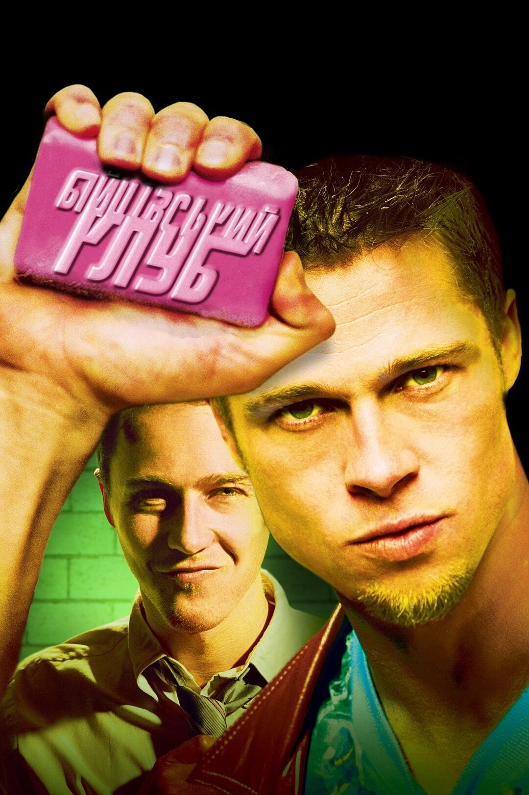

Бійцівський клуб (1999)
Жанр: психологічна драма, трилер
Режисер: Девід Фінчер
У ролях: Едвард Нортон, Бред Пітт, Гелена Бонем Картер
Фільм розповідає історію чоловіка, який страждає на безсоння і відчуження. Він знайомиться з харизматичним Тайлером Дьордоном і разом вони створюють підпільний "бійцівський клуб" — місце, де чоловіки борються, щоб відчути себе живими.
Це культовий фільм із глибоким підтекстом про споживацтво, ідентичність та повстання проти сучасного суспільства.